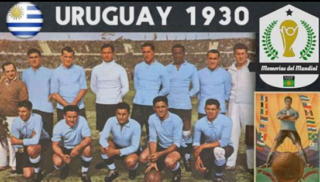

1930 - Uruguay
Fue el primer Mundial de la historia, organizado por Uruguay para celebrar el centenario de su independencia. Solo participaron 13 equipos debido a las dificultades de viaje. La final enfrentó a Uruguay y Argentina en un clima de gran rivalidad, y los locales ganaron 4-2 en el Estadio Centenario, convirtiéndose en los primeros campeones del mundo.

1934 - Italia
Este Mundial fue el primero con fase clasificatoria previa y formato de eliminación directa. Italia se consagró campeón en un torneo marcado por la influencia política del régimen de Mussolini. La final contra Checoslovaquia se definió en tiempo extra, consolidando a Italia como una potencia emergente.

1938 - Francia
Italia logró el bicampeonato en un contexto mundial tenso, previo a la Segunda Guerra Mundial. Muchos equipos enfrentaron dificultades políticas y económicas. Brasil comenzó a destacarse como potencia futbolística, mostrando un estilo ofensivo que marcaría su historia.

1950 - Brasil
Recordado por el “Maracanazo”, este Mundial no tuvo final tradicional sino un grupo decisivo. Brasil era el gran favorito y solo necesitaba empatar, pero Uruguay sorprendió ganando 2-1 en un estadio Maracaná repleto. Este resultado es considerado uno de los mayores impactos en la historia del deporte.

1954 - Suiza
Hungría llegaba como favorita tras una racha invicta impresionante, pero Alemania Occidental logró una remontada histórica en la final, ganando 3-2. Este partido, conocido como el “Milagro de Berna”, simboliza una de las mayores sorpresas del fútbol mundial.

1978 - Argentina
Argentina ganó su primer Mundial jugando como local. El equipo, liderado por Mario Kempes, venció a Países Bajos en la final. El torneo se desarrolló en un contexto político complejo, pero en lo deportivo significó un momento histórico para el país.
1982 - España
Este Mundial amplió la participación a 24 equipos. Italia, que había comenzado con dudas, terminó coronándose campeón gracias a una destacada actuación de Paolo Rossi, quien fue el máximo goleador del torneo.

1994 - Estados Unidos
Fue un Mundial muy exitoso en términos de público y organización. La final entre Brasil e Italia terminó sin goles y se definió por penales. Roberto Baggio falló el último disparo, dándole a Brasil su cuarto título mundial.

2010 - Sudáfrica
Primer Mundial en África. España logró su primer campeonato con un estilo de juego basado en la posesión. El gol de Andrés Iniesta en la final ante Países Bajos quedó grabado como uno de los momentos más importantes del fútbol moderno.

2018 - Rusia
Francia conquistó su segundo título mundial con un equipo joven y dinámico. Croacia fue la gran sorpresa al llegar a la final. Kylian Mbappé brilló como una de las nuevas estrellas del fútbol internacional.

2022 - Qatar
Considerado uno de los mejores Mundiales de la historia. Argentina ganó una final épica contra Francia tras empatar 3-3 y definir por penales. Lionel Messi logró finalmente levantar la Copa del Mundo, cerrando una carrera legendaria.

2026 - Próximamente
Será el Mundial más grande de la historia con 48 equipos y tres países organizadores: Estados Unidos, México y Canadá. Este nuevo formato busca ampliar la participación y generar un torneo aún más global.